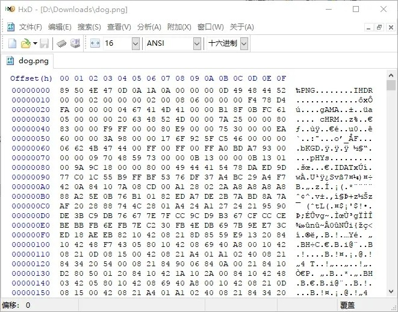
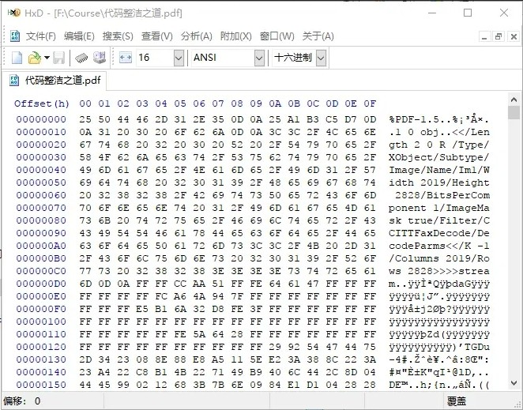

从其它平台迁移而来
有时候，我们会下载到或者从邮箱接收到一些莫名其妙的文件——只有名字，没有后缀名（文件扩展名），排除不安全因素后，确定这就是我们想要的文件，但是不知道文件格式或者不知道用什么软件来打开查看，对于大多数人来说这可是个比较头疼的问题。
但是，如果掌握一些基础知识的话，这样的问题其实是很好解决的！
知识点一：
文件后缀名（扩展名）和文件格式没有半毛钱关系！
文件格式实际上是由文件开头的若干字节来描述的，这些文件描述称为文件头（注意，不是c/c++里的.h头文件）。
那么，后缀名是用来做什么的呢？后缀名仅仅是为了方便从文件名中知道文件是什么格式，一方面给用户（你，我，他）看，另一方面给操作系统看，由操作系统判断使用哪个阅读器、浏览器、工具等软件打开，而这些软件对文件的解析就是根据文件头的描述来进行的。
知识点二：
本质上所有的文件都是二进制文件！
文本、源码（其实也是文本）、word、excel、ppt、pdf、dll、exe、图片、压缩包……都是二进制文件，因为现代计算机系统只认识0和1。不信的话可以用十六进制工具打开来查看。
好了，有了这两个基础知识，我们就可以进行继续了。上面提到了十六进制工具，这里我们要使用的神器也正是它！

这是一张png图片，用十六进制打开后是这样的，可以明显看到有PNG字样。

这是一个pdf文件，也可以明显看到PDF字样。
就不再贴图了，套路就是这么个套路，下面就直接上整理好的常用的对应表了！
| 文件格式 | 文件头 |
|---|---|
| bmp图片 | 42 4D (BM) |
| png图片 | 89 50 4E 47 (‰PNG) |
| jpg图片 | FF D8 |
| pdf文档 | 25 50 44 46 (%PDF) |
| zip压缩包 | 50 4B (PK) |
| rar压缩包 | 52 61 72 (Rar) |
| 7z压缩包 | 37 7A (7z) |
| docx、xlsx、pptx | 50 4B (PK) |
| dll或exe | 4D 5A (MZ) |
可看到，Microsoft Office 2007 及以上版本的 docx、xlsx、pptx 与 zip压缩包的文件头是一样的，是不是搞错了？没错，Microsoft Office 2007 及以上版本的 docx、xlsx、pptx 实际上就是一个 zip压缩包，不信的小伙伴儿们可以把后缀名改为zip用解压工具打开看看真面目。
就到这里吧，更多文件格式就烦请亲自动手尝试了，说不定会有什么惊奇的发现呢！